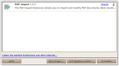

Erweiterungen
Dieser Artikel wurde für die folgenden Ubuntu-Versionen getestet:
Ubuntu 14.04 Trusty Tahr
Über eine eigene Seite LibreOffice Extensions 
 können kostenlose Erweiterungen für LibreOffice heruntergeladen werden. Aufgeteilt ist das Angebot in "Extensions" (Erweiterungen) und "Templates" (Vorlagen).
können kostenlose Erweiterungen für LibreOffice heruntergeladen werden. Aufgeteilt ist das Angebot in "Extensions" (Erweiterungen) und "Templates" (Vorlagen).
Die jeweiligen .oxt-Dateien werden heruntergeladen und über "Extras -> Extension Manager... -> Hinzufügen" aktiviert. Der Manager zeigt alle installierten Erweiterungen an. Dabei ist zwischen systemweiten und solchen Erweiterungen zu unterscheiden, die nur einen einzelnen Benutzer betreffen. Nur die benutzereigenen können nach Anwahl auf Wunsch deaktiviert ("Deaktivieren") oder wieder gelöscht ("Entfernen") werden.
|  |
| Extension Manager |
Für auf Java basierende Erweiterungen ist eine Java-Laufzeitumgebung (JRE) und folgendes Paket zu installieren:
libreoffice-java-common
 mit apturl
mit apturl
Paketliste zum Kopieren:
sudo apt-get install libreoffice-java-common
sudo aptitude install libreoffice-java-common
Erweiterungen¶
LanguageTool¶
LanguageTool ist eine freie Stil-, Rechtschreib- und Grammatikprüfung. Sie ist für LibreOffice 3.5.4 oder neuer als Erweiterung verfügbar, kann aber auch als eigenständiges Programm ausgeführt werden. In beiden Fällen wird als Voraussetzung ein JRE benötigt.
Nach der Installation der Erweiterung ist ein Neustart von LibreOffice erforderlich.
LibreLogo¶
Hinweis:
Die ehemalige Erweiterung "LibreLogo" wurde ab LibreOffice 4.0 in den Quellcode von LibreOffice integriert und ist jetzt fester Bestandteil von LibreOffice.
Mit dieser leichtgewichtigen Implementierung (gerade mal 1400 Zeilen Python-PyUNO-Code) wird eine einfache Programmierschnittstelle zur Verfügung gestellt, welche die exzellente Vektorgrafik von LibreOffice für Grafikdesign und Bildung interessant macht.
Falls LibreLogo bei einer Standardinstallation von LibreOffice 3.x fehlt, müssen folgende Pakete manuell nachinstalliert werden:
libreoffice-script-provider-python (universe, die Python-Schnittstelle - Voraussetzung zur Verwendung von Logo)
libreoffice-librelogo (universe, das eigentliche Paket, ab Ubuntu 13.04)
mit apturl
Paketliste zum Kopieren:
sudo apt-get install libreoffice-script-provider-python libreoffice-librelogo
sudo aptitude install libreoffice-script-provider-python libreoffice-librelogo
Alternativ kann die Erweiterung auch manuell heruntergeladen  und installiert werden. Nach der Installation ist ein Neustart von LibreOffice erforderlich. Die neuen Schaltflächen werden im Menü unter "Ansicht -> Symbolleisten -> Logo" aktiviert.
und installiert werden. Nach der Installation ist ein Neustart von LibreOffice erforderlich. Die neuen Schaltflächen werden im Menü unter "Ansicht -> Symbolleisten -> Logo" aktiviert.
c't Writer Tools¶
Die c't Writer Tools sind eine ältere Sammlung von Makros für Apache Openoffice, die sich auch mit LibreOffice Writer mit Einschränkungen nutzen lassen. Zur Installation die Datei 1014-166.zip herunterladen, entpacken und die Erweiterung Writer_Tools_CT.oxt öffnen bzw. installieren.
Nun steht ein neuer Menüpunkt "Writer-Tools" zur Verfügung. Enthalten sind folgende Funktionen:
"Aktuelle Seite drucken" (funktioniert nicht mehr)
"Seitenzahl einfügen..." (ohne deaktiviertes "Seitenzahl auf erster Seite")
"Seitennummer ändern"
"harte Umbrüche entfernen"
"harte Formatierungen entfernen"
"Word-Vorlagen entfernen"
"erweiterter PDF-Druck"
"Bilder rotieren/beschneiden/archivieren"
"Dateien listen" (praktisch, um eine Liste mit Dateien einer Ordners zu erstellen)
"Bedingte Seriendruckfelder einfügen"
"Seriendruckfelder entfernen"
"Dateiinformationen" (diverse Werte wie Anzahl der Zeichen, Zeilen, Absätze, Seiten usw.)
Für die Tabellenkalkulation Calc steht eine ähnliche Sammlung als c't Calc Tools zur Verfügung.
 Hauptartikel
Hauptartikel- Erstellt mit Inyoka
-
 2004 – 2017 ubuntuusers.de • Einige Rechte vorbehalten
2004 – 2017 ubuntuusers.de • Einige Rechte vorbehalten
Lizenz • Kontakt • Datenschutz • Impressum • Serverstatus -
Serverhousing gespendet von